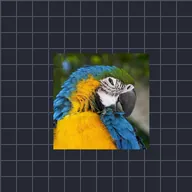

Випадкове тремтіння

Змушує шар випадково стрибати туди й назад під кутом.
Налаштування
| Налаштування | Тип | Діапазон | Типово |
|---|---|---|---|
| Кут | Кут | від -3600° до 3600° | 45° |
| Частота | Число | від 1 до 60 | 30 |
| Амплітуда | Число | від 1 до 2000 | 25 |
| Зерно | Число | від 0 до 1 | 0 |
| Люфт | Число | від 0% до 100% | 0% |
| Тремтіння по Z | Число | від 0 до 2000 | 0 |